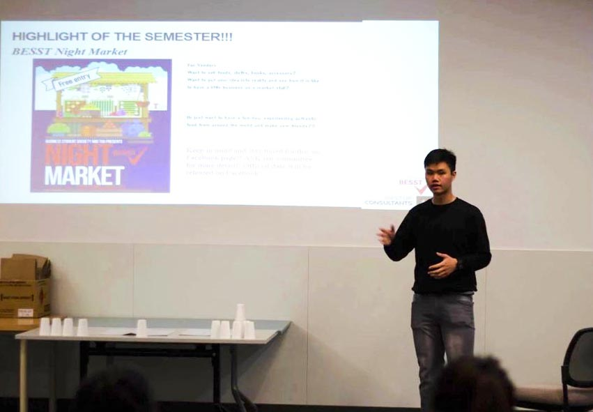

This is
About Me
My name is Brandon Liau and I am very passionate about data. In December 2019 I graduated from the University of Tasmania/Australian Maritime College with a degree in BA (Maritime and Logistics Management).
During my time at the university, my friends and I founded a Business society called Business and Economics Student Society of Tasmania (BESST) with a goal to provide assistance to business students. My time with BESST has been incredible, I met with a lot of people, learnt so much about how business works. We manage to get supports from the BIG 4 firms and local government to not only sponsor financially but also provide insights to our members and opportunities when they graduated from the university. It has been a great experience for me and my team. We started with just five people and now we have more than 100 active members and they are still to grow.
Right after graduating from the University, I was lucky to land a job as a Procurement Officer - Analysis and Reporting. Working in a big company as a fresh graduate has been very challenging especially when covid-19 hits the world. We were all forced to work from home, without much experience was a bit struggling. But thanks to the team, I was able to get a lot of support from them. Keeping the communication open is very important to make sure that each of us is being communicated properly and there is no doubling of work.
My love for data analysis begins when I was tasked to do a company spend and category spend analysis in the middle of covid-19. The company revenue was significantly impacted by the pandemic, so the only way to survive is to reduce company spend. So I was tasked to do the analysis, the focus of this analysis is to find out where all the money was spent. I was able to identify which vendor we spend the most and what kind of stuff we spend on. And tackling each vendor to engage in negotiation to bring the cost down. By the end of this project, we managed to save millions in dollars of expense.
After this experience, I realised that data is an important asset to the company. With data, it can provide you key insights to better understand the performance. It shows you what works and what does not work, giving you breakdowns so the business can make the right decision to improve the processes.
Since then, I started to pick up professional courses like the IBM Data Analyst to improve my analysis skills. Of Course, there is still more for me to learn about data analysis and that is what motivate me to create my own projects. Most of my project topics are the topic that piques my interest. If you are interested to check out my projects or my resume, you can click below;